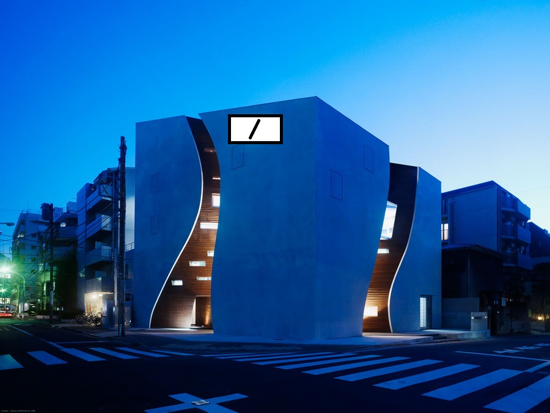

немного о нас:
 Закрытое акционерное общество «Инволюкс» (ЗАО «Инволюкс») является одним из крупнейших мебельных производителей на территории СНГ. Компания более 15 лет производит высококачественную корпусную мебель, радуя своими оригинальными интерьерными решениями миллионы людей. Компания работает на белорусском рынке с 1998 года. В то время ЗАО «Инволюкс» производило преимущественно офисную мебель. Признание покупателей позволило компании расширить свое присутствие на рынке и перейти к освоению новых сегментов. В 2006 году компания начала выпускать мебель для дома и гостиниц. Сегодня «Инволюкс» обладает мощной производственной базой и широкой дилерской сетью, охватывающей страны СНГ и Европы. Производство мебели осуществляется в СЭЗ «Брест». Завод компании расположен на территории в 8 гектаров и оснащен современным оборудованием. Производственными линиями столь высокого качества обладают лишь несколько крупных компаний Восточной Европы. Торговое представительство ЗАО «Инволюкс» находится в Минске, что позволяет эффективно работать с клиентами из Беларуси и других стран. Всего на предприятии трудятся более 500 высококвалифицированных специалистов. Компанию отличает широкий ассортимент продукции. Потребителям доступны десятки мебельных коллекций INVOLUX разного ценового диапазона. Каждое изделие отличают уникальный дизайн, богатое функциональное наполнение и надежность конструкций. Предметы мебели выпускаются сразу в нескольких цветовых решениях, чтобы учесть предпочтения покупателей. Более 80% мебели поставляется на экспорт. Компания гордится своей системой менеджмента. Высокие стандарты ЗАО «Инволюкс» в области разработки и производства мебели признаны на международном уровне. Французская компания «Бюро Веритас» выдала компании сертификат ISO 9001:2008. К тому же каждая мебельная коллекция проходит сертификацию в Беларуси. При изготовлении мебели ЗАО «Инволюкс» использует исходные материалы только от ведущих европейских поставщиков. Плитные материалы компания получает от австрийской компании EGGER и швейцарского производителя KRONO. Пленки для МDF предприятию поставляет австрийская компания KRONOSPAN и швейцарская компания KRONO. Из Германии поступают кромочные материалы DOLLKEN и REHAU. При закупке мебельной фурнитуры фирма сотрудничает с немецкими компаниями HETTICH и HAEFELE, польской GAMET, датской SISO, итальянскойMUZZIN. Предприятие оборудовало более миллиона мест для работников и руководителей офисов по всему миру. Тысячи квартир и гостиничных номеров в сотнях городов украсили коллекции мебели для дома Involux. Высокое качество плитных материалов и фурнитуры позволяет создавать мебель для самых взыскательных клиентов. Это, в частности, подтверждают полученные компанией награды на международных конкурсах. Компания «Инволюкс» неоднократно становилась триумфатором международной выставки «Мебель» в Москве, побеждала в конкурсах, проводимых в странах СНГ. Бренд INVOLUX широко известен как в Беларуси, так и за рубежом.